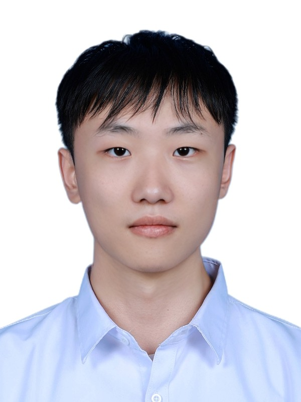
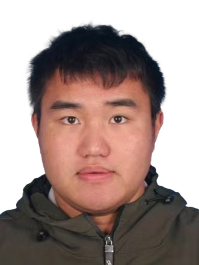
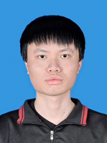

中科大空间智能实验室 SPIN Lab
首页
实验室简介
团队成员
学术成果
招生信息
教师团队
夏彦
中国科学技术大学人工智能与数据科学学院 预聘副教授
博士毕业于德国慕尼黑工业大学，期间在牛津大学VGG实验室联合培养。研究成果发表于CVPR、ICCV、ECCV和ISPRS JPRS等国际顶级会议和期刊
研究生
123
曹学伟
博士研究生
曹学伟是中国科学技术大学SPIN-LAB的三年级博士生,师从夏彦导师。研究方向为3D点云处理领域,目前感兴趣的方向为多模态内容处理和AI for science。
吴雨涵
博士研究生
吴雨涵是中国科学技术大学SPIN-LAB实验室的在读博士研究生,由夏彦老师指导。专注于具身智能、移动机器人自主导航和移动操作任务的研究。

王志超
硕士研究生
王致超，中国科学技术大学SPIN-LAB实验室在读硕士研究生，师从夏彦导师。在具身智能、机器人等领域进行探索学习。

王硕
硕士研究生
王硕，中国科学技术大学SPIN-LAB实验室在读硕士研究生，师从夏彦导师。致力于具身智能、自动驾驶、多模态感知等领域的研究学习。

曾斌
硕士研究生
曾斌，中国科学技术大学SPIN-LAB实验室在读硕士研究生，由夏彦老师指导。感兴趣的研究方向为具身智能、自动驾驶与机器人感知定位。
加入我们
我们实验室欢迎对具身智能、机器学习、人工智能等领域感兴趣的优秀学生和研究人员加入。我们提供开放、创新的研究环境和丰富的学术资源。
查看招生信息